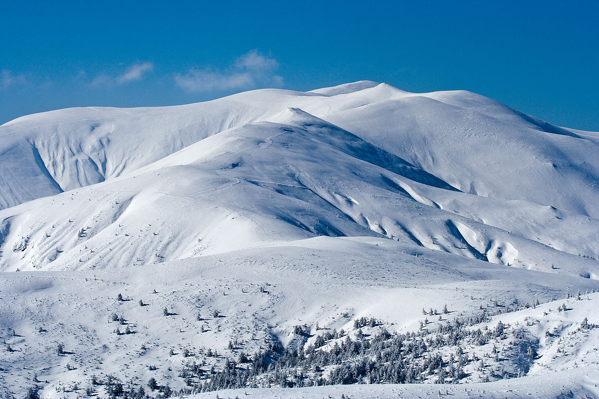

На 5-то място ще ви представим Осоговска планинa
Връх Руен е най-високият връх на Осоговска планина със своите 2251 м. Неговата височина нарежда Осогово на пето място по височина сред българските планини след Рила, Пирин, Стара планина и Витоша. Намира се в Кюстендилска област, на границата с Македония, което го прави привлекателен за туристи от двете държави.
Имайте предвид, че статутът му на граничен връх изисква предупреждение за посещение на граничните власти.
Обратно към главната страница